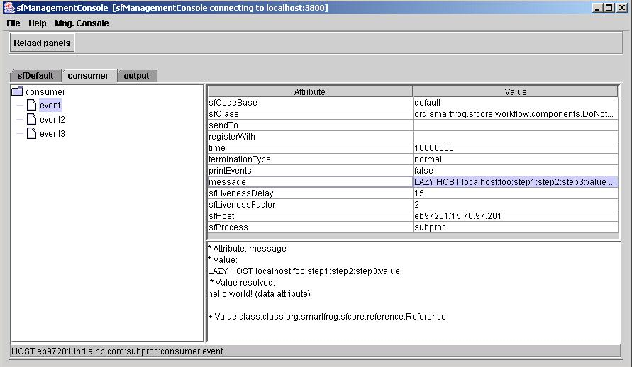
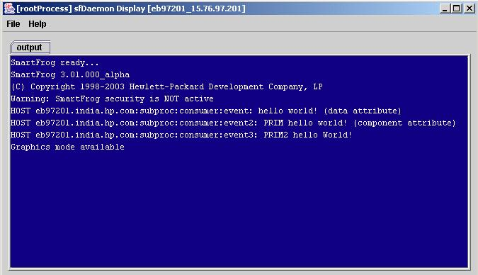

Goal of this example:
This example shows how the references are resolved at run-time.
Internal Functionality:
The datareaders example uses two components: dataConsumer which reads the data and dataProvider which provides the data. The dataConsumer has Lazy references for the attributes defined in dataProvider. These references remain unresolved untill dataProvider is started. Once dataProvider is started the references are resolved at run-time and the values attributes defined in dataConsumer are read.
Running the example (using SmartFrog Management Console):
Scenario 1(consumer started before provider):
- Start daemon
on
localhost
- Start
dataConsumer.sf
- Start sf management console using the "sub-proc" gui menu Help
-> SF Mng Console.
- Check references with console. The references are not resolved and cannot
be read.
Expected Output of SF Mng Console:
- Start dataProvider.sf
- Go to sf management console.
- Check references with console. The references are now resolved and can
be read.
Expected Output of SF Mng Console:

Scenario 2 ( provider started before comsumer):
- Start daemon
on
localhost
- Start
dataProvider.sf
- Start
dataConsumer.sf
- Start sf management console using the "sub-proc" gui menu Help
-> SF Mng Console.
- Check references with console. The references are resolved and can be
read.
-Stop daemon
Expected Output:

Expected Output of SF Mng Console: